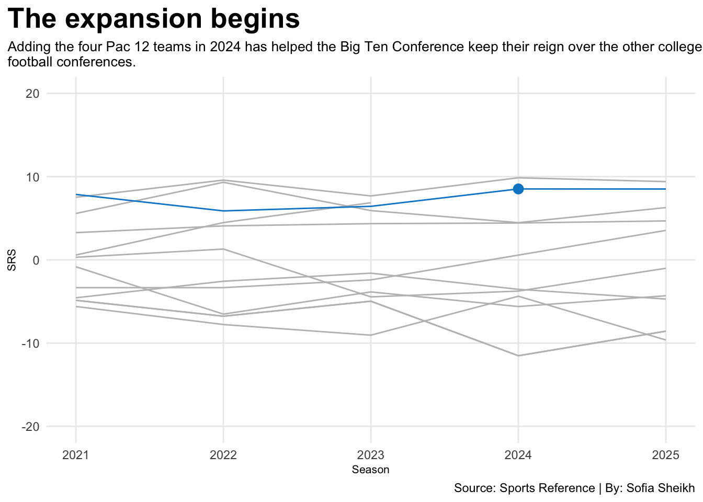
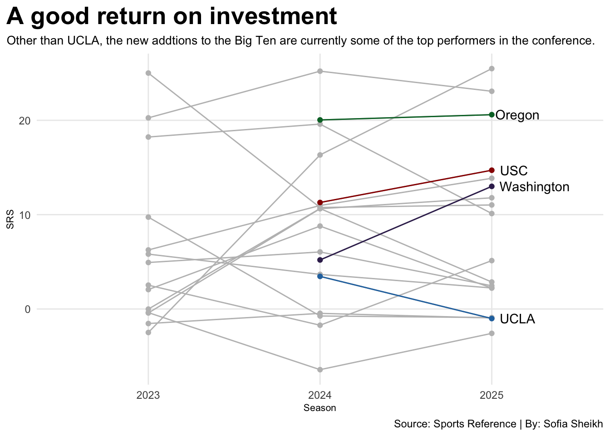

Was adding four Pac-12 teams a good move for the Big Ten Conference
football
college
sports
Author
Sofia Sheikh
Published
April 24, 2026
In 2024, the Big Ten added the University of Oregon, the University of California, Los Angeles (UCLA), the University of Southern California (USC) and the University of Washington to its conference for athletics. This was done for several reasons, the primary ones being to increase revenue, establish an audience on the West Coast and to compete with the Southeastern Conference (SEC).
While only two complete seasons for college football have passed, has the Big Ten benefited from conference standing? Are there at least footsteps in the right direction to show this was a good move in the long run?
The following graph displays college football conference standings over the past five years, ranked by Sports Reference’s Simple Rating System (SRS). The Simple rating system measures overall strength by comparing the average point differential and the strength of schedule to objectively assess how good a team was during a particular season.
Code
library(tidyverse)library(gt)conf25 <-read.csv("fb_conf_summary_25.csv")conf24 <-read.csv("fb_conf_summary_24.csv")conf23 <-read.csv("fb_conf_summary_23.csv")conf22 <-read.csv("fb_conf_summary_22.csv")conf21 <-read.csv("fb_conf_summary_21.csv")conferences <-bind_rows( conf21, conf22, conf23, conf24, conf25)american <- conferences|>filter(Conference =="American Conference")acc <- conferences|>filter(Conference =="Atlantic Coast Conference")bigten <- conferences|>filter(Conference =="Big Ten Conference")big12 <- conferences|>filter(Conference =="Big 12 Conference")usa <- conferences|>filter(Conference =="Conference USA")mid <- conferences|>filter(Conference =="Mid-American Conference")west <- conferences|>filter(Conference =="Mountain West Conference")pac <- conferences|>filter(Conference =="Pac-12 Conference")fbs <- conferences|>filter(Conference =="Independent")sec <- conferences|>filter(Conference =="Southeastern Conference")sun <- conferences|>filter(Conference =="Sun Belt Conference")ggplot() +geom_line(data=american , aes(x=Season, y=SRS), color="grey") +geom_line(data=acc , aes(x=Season, y=SRS), color="grey") +geom_line(data=big12, aes(x=Season, y=SRS), color="grey") +geom_line(data=usa, aes(x=Season, y=SRS), color="grey") +geom_line(data=fbs, aes(x=Season, y=SRS), color="grey") +geom_line(data=mid, aes(x=Season, y=SRS), color="grey") +geom_line(data=west, aes(x=Season, y=SRS), color="grey") +geom_line(data=pac, aes(x=Season, y=SRS), color="grey") +geom_line(data=sec, aes(x=Season, y=SRS), color="grey") +geom_line(data=usa, aes(x=Season, y=SRS), color="grey") +geom_line(data=sun, aes(x=Season, y=SRS), color="grey") +geom_line(data=bigten, aes(x=Season, y=SRS), color="#0088CE") +geom_point( data =filter(bigten, Season ==2024), aes(x = Season, y = SRS), color ="#0088CE", size =3) +scale_y_continuous(limits =c(-20, 20)) +labs(x="Season", y="SRS", title="The expansion begins", subtitle="Adding the four Pac 12 teams in 2024 has helped the Big Ten Conference keep their reign over the other college\nfootball conferences.",caption="Source: Sports Reference | By: Sofia Sheikh" ) +theme_minimal() +theme(plot.title =element_text(size =20, face ="bold"),axis.title =element_text(size =8), plot.subtitle =element_text(size=10), panel.grid.minor =element_blank(),plot.title.position ="plot" )

After examining this graph, it is clear that the Big Ten has always been, if not the strongest conference in college football, in recent history. The expansion so far has helped them keep their reign.
Now, are the new additions helping to keep the Big Ten strong, or are the other well-established teams carrying most of the weight to keep the conference afloat?
Code
standings23 <-read.csv("2023_standings.csv")standings24 <-read.csv("2024_standings.csv")standings25 <-read.csv("2025_standings.csv")standings <-bind_rows( standings23 |>mutate(Season =2023), standings24 |>mutate(Season =2024), standings25 |>mutate(Season =2025))big10 <-c("Big Ten", "Big Ten (East)", "Big Ten (West)") standingsbig <- standings |>filter(Conf %in% big10 )ou <- standingsbig |>filter(School =="Oregon")ucla <- standingsbig |>filter(School =="UCLA")usc <- standingsbig |>filter(School =="USC")wu <- standingsbig |>filter(School =="Washington")ggplot() +geom_line(data=standingsbig, aes(x=Season, y= SRS, group=School), color="grey") +geom_point(data=standingsbig, aes(x=Season, y= SRS, group=School), color="grey") +geom_line(data=ou, aes(x=Season, y= SRS, group=School), color="#007030") +geom_point(data=ou, aes(x=Season, y= SRS, group=School), color="#007030") +geom_line(data=ucla, aes(x=Season, y= SRS, group=School), color="#2774AE") +geom_point(data=ucla, aes(x=Season, y= SRS, group=School), color="#2774AE") +geom_line(data=usc, aes(x=Season, y= SRS, group=School), color="#990000") +geom_point(data=usc, aes(x=Season, y= SRS, group=School), color="#990000") +geom_line(data=wu, aes(x=Season, y= SRS, group=School), color="#39275B") +geom_point(data=wu, aes(x=Season, y= SRS, group=School), color="#39275B") +geom_text(data=ou |>filter(Season ==max(Season)), aes(x=Season + .15, y=SRS, group=School, label=School)) +geom_text(data=ucla |>filter(Season ==max(Season)), aes(x=Season + .15, y=SRS, group=School, label=School)) +geom_text(data=usc |>filter(Season ==max(Season)), aes(x=Season + .13, y=SRS, group=School, label=School)) +geom_text(data=wu |>filter(Season ==max(Season)), aes(x=Season + .25, y=SRS, group=School, label=School)) +scale_x_continuous(breaks=c(2023, 2024, 2025), limits=c(2022.5,2025.5)) +labs(x="Season", y="SRS", title="A good return on investment", subtitle="Other than UCLA, the new addtions to the Big Ten are currently some of the top performers in the conference.", caption="Source: Sports Reference | By: Sofia Sheikh" ) +theme_minimal() +theme(plot.title =element_text(size =20, face ="bold"),axis.title =element_text(size =8), plot.subtitle =element_text(size=10), panel.grid.minor =element_blank(),plot.title.position ="plot" )

Ignoring UCLA, these new additions are thriving and ranked very highly among the other Big Ten schools, even outperforming some other well-established programs, as indicated by SRS.
While SRS is a great way to assess how objectively well-rounded a team is, it is important to evaluate the win-loss percentage. Win-loss percentage measures how many wins and losses a team has, so it is easier and fairer to compare teams that have played different numbers of games or that have tied through the stages.
Code
standingsbig25 <- standings25 |>filter(Conf =="Big Ten") |>select(School,W, L, Pct) |>arrange(desc(Pct))standingsbig25 |>gt() |>cols_label(Pct ="Win-Loss Percentage", )|>tab_header(title ="Well, you can't win them all",subtitle ="Comparing SRS to win-loss perecntage, their are very simliar, which is good news. However, UCLA might have been a mistake to add to the Big Ten." )|>tab_style(style =cell_text(color ="black", weight ="bold", align ="left"),locations =cells_title("title") )|>tab_style(style =cell_text(color ="black", align ="left"),locations =cells_title("subtitle") )|>tab_source_note(source_note =md("**By:** Sofia Sheikh | **Source:** Sports Reference") )|>tab_style(locations =cells_column_labels(columns =everything()),style =list(cell_borders(sides ="bottom", weight =px(3)),cell_text(weight ="bold", size=12) ))|>opt_row_striping() |>opt_table_lines("none") |>fmt_percent(columns =c(Pct),decimals =1 )|>tab_style(style =list(cell_fill(color ="#007030"),cell_text(color ="white") ),locations =cells_body(rows = School =="Oregon") )|>tab_style(style =list(cell_fill(color ="#2774AE"),cell_text(color ="white") ),locations =cells_body(rows = School =="UCLA") )|>tab_style(style =list(cell_fill(color ="#990000"),cell_text(color ="white") ),locations =cells_body(rows = School =="USC") )|>tab_style(style =list(cell_fill(color ="#39275B"),cell_text(color ="white") ),locations =cells_body(rows = School =="Washington") )|>opt_row_striping() |>opt_table_lines("none") |>tab_style(style =cell_borders(sides =c("top", "bottom"), color ="grey", weight =px(1)),locations =cells_column_labels(everything()) )
Well, you can't win them all
Comparing SRS to win-loss perecntage, their are very simliar, which is good news. However, UCLA might have been a mistake to add to the Big Ten.
School
W
L
Win-Loss Percentage
Indiana
16
0
100.0%
Oregon
13
2
86.7%
Ohio State
12
2
85.7%
Michigan
9
4
69.2%
USC
9
4
69.2%
Iowa
9
4
69.2%
Illinois
9
4
69.2%
Washington
9
4
69.2%
Minnesota
8
5
61.5%
Nebraska
7
6
53.8%
Northwestern
7
6
53.8%
Penn State
7
6
53.8%
Rutgers
5
7
41.7%
Wisconsin
4
8
33.3%
Maryland
4
8
33.3%
Michigan State
4
8
33.3%
UCLA
3
9
25.0%
Purdue
2
10
16.7%
By: Sofia Sheikh | Source: Sports Reference
Win percentage and SRS appear to have similar results in the Big Ten Conference during the 2025 season. This means these comparisons are accurate in displaying how strong each team is.
Overall, adding the four Pac-12 teams to the Big Ten conference, concerning football standings, was a great move.
Three out of the four teams rank among the top 10 teams in the conference. This means they are performing very well, and there are footsteps in the right direction for conference growth.